Early Gesture Recognition with Low-Order Path Signatures
Detailed report · November 2026 · code · narrative blog post · PDF version
This page is the technical report for earlysig: a CPU-only research package and local drawing application that recognises a single pen or mouse stroke while it is being drawn. At every 25 ms tick a classifier produces provisional class scores from the visible prefix only, and a separate decision policy either waits or makes one irreversible early commitment. The classifier never sees the final duration, the final point count, the true progress fraction, the writer, the label, or any future coordinate.
1. The problem, in operational terms
Gesture recognisers normally wait for the stroke to end and then classify it. Interactive systems sometimes cannot afford to wait: they want to preview a label, fire a shortcut, or feel responsive. Early recognition then becomes two coupled but separable problems: prediction (what does the visible prefix look like right now?) and stopping (is the evidence good enough to commit once, given that a commitment cannot be revised?). Conflating them produces familiar measurement mistakes, such as reporting accuracy only over the strokes the system decided to accept, or tuning a threshold on the same data used to report its error.
The system is scoped narrowly on purpose: one stroke at a time, closed-set classes, a known pointer-down start, and pointer-up completion. There is no continuous spotting, no multistroke recognition, no unknown-class rejection, and no online training.
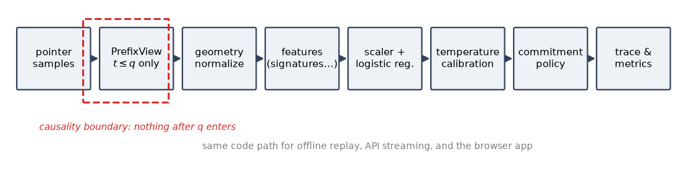
2. Data
2.1 A controlled shared-prefix diagnostic
Real gesture data confounds three questions at once: does the model use the prefix, does it exploit subtle
shortcuts, and can early prediction be informative before the classes diverge? To isolate them we generate
families of three labels (turn_up, turn_down, loop) that share a
byte-identical prefix and identical timestamps until a branch point at 25% of the duration, then diverge into
a cubic Bézier turn or a full ellipse loop. Within a family, one translation, scale, rotation, duration, and
prefix noise realisation are shared by all three siblings.
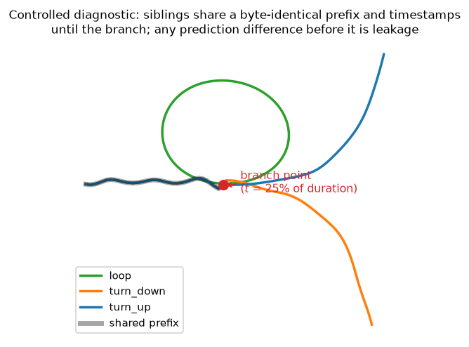
The standard run has 300 families (900 strokes), split by family 150/30/30/30/60 into training, development, calibration, policy, and test. The diagnostic is not evidence about human gestures; it is a leakage alarm.
2.2 The public $1 unistroke logs
The public dataset is the University of Washington $1 unistroke corpus. The downloader verifies the
archive by size (4,789,784 bytes) and SHA-256
(c5d81282…e43f6) before use, and an audit confirms 5,280 recordings total, the 480-recording
pilot folder, 4,800 standard recordings, ten writers with 480 recordings each, sixteen classes with 300 each,
three speed conditions with 1,600 each, and no malformed timestamps or point counts. This report uses six
classes — arrow, caret, check, circle, rectangle, triangle — giving 1,800 strokes.
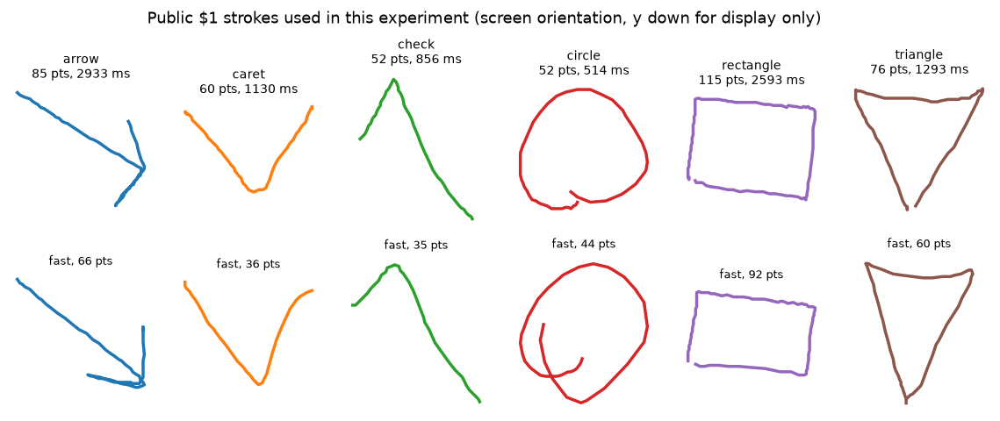
2.3 Writer-disjoint folds
The partition unit is the writer: every speed condition and repetition of a writer stays in one role. Five
outer folds rotate the ordered writers [2,3,4,5,6,7,8,9,10,11] left by two per fold; the first
five train, then one writer each for development, calibration, and policy selection, and the last two test.
Each writer is tested exactly once across the five folds, so pooling yields 1,800 out-of-fold test strokes
per model. Roles are assigned by position, never by measured performance.
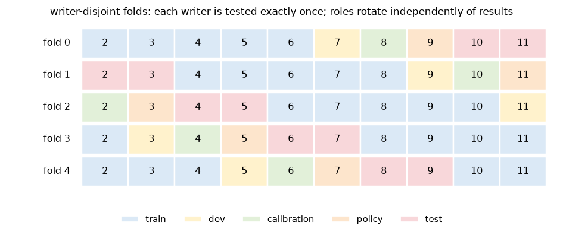
3. Causal processing
At query \(q\) milliseconds after pointer-down, the visible observations are exactly those with \(t_i \le q\). No point is interpolated using a future sample. Query time advances during pauses while positions do not change; the spatial path stays fixed, the recent window may shrink or empty, and heartbeats never satisfy the policy's movement requirement. The true progress \(q/T\) is computed only in the metrics layer, after the prediction.
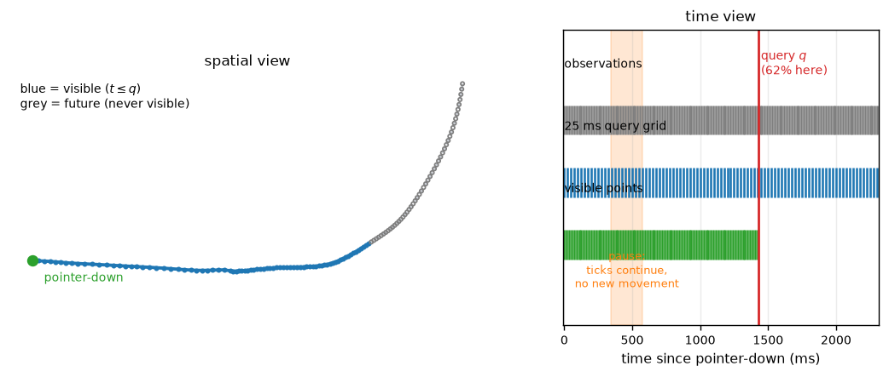
At every query the visible prefix is translated to its first point and divided by one isotropic factor \(s=\max(\mathrm{range}_x,\mathrm{range}_y)\) computed over the visible prefix only. One scale, not separate x/y scales: orientation and aspect ratio are preserved, and no rotation to a completed gesture's indicative angle is performed. Because \(s\) changes as the stroke grows, signatures are recomputed from the current normalised prefix at every query; normalised increments are never appended to an older signature state.
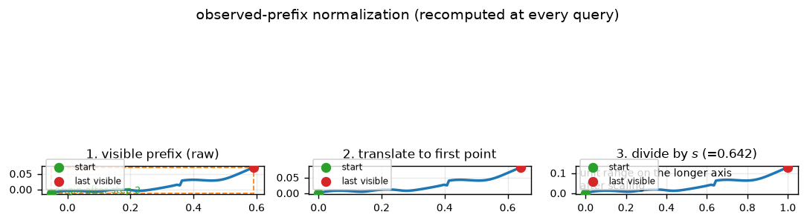
| Branch | Window | Rules |
|---|---|---|
| G (global) | whole visible prefix | same scale \(s\); recomputed each query |
| R (recent) | \([\max(0,q-250\,\mathrm{ms}),\,q]\) | lower edge may interpolate between visible samples; upper edge \(q\) never does |
| H (historical) | \([0,\,q/2]\) | matched-size control; same scale \(s\) |
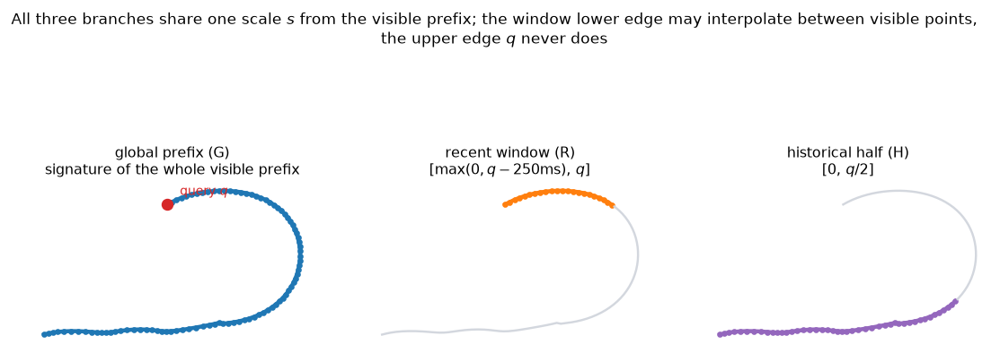
4. Eight representations
Signatures here are computed exactly for the piecewise-linear path with the truncated Chen product (float64, levels 1..3 and optionally 4, flattened in lexicographic order). Level 1 is total displacement; level 2 entries are \(xx,xy,yx,yy\) with the antisymmetric part equal to signed swept area; level 3 has eight ordered triples. Nothing is approximated with left-Riemann sums, so same-segment terms survive.
| ID | Content | Dim | Role |
|---|---|---|---|
| MOTION | prefix motion statistics | 12 | no-signature control |
| COORD16 | 16 arc-length-resampled positions | 32 | crop-then-resample baseline |
| G1 | global signature, depth 1 | 2 | displacement only |
| G2 | global signature, depth 2 | 6 | adds ordered pair interactions |
| G3 | global signature, depth 3 | 14 | primary global representation |
| G3R3 | G3 + recent 250 ms depth 3 | 28 | H2 treatment |
| G3H3 | G3 + historical half-prefix depth 3 | 28 | H2 matched-size control |
| TEMPLATE | nearest prefix templates over COORD16 | 32 | non-parametric baseline |
MOTION and COORD16
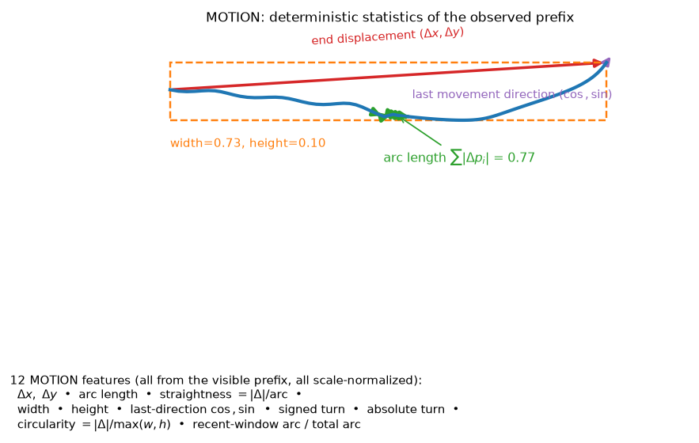
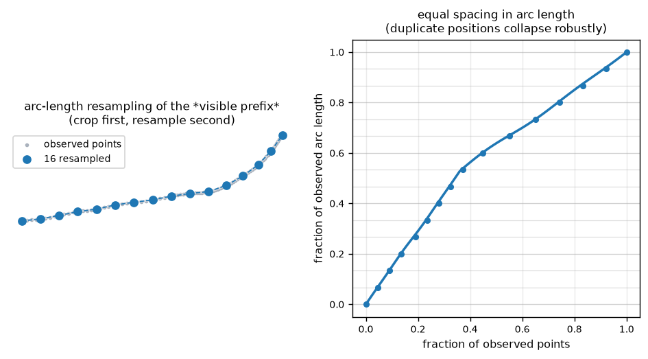
G1, G2, G3
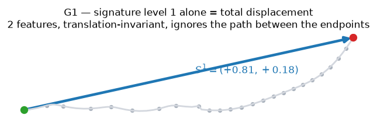
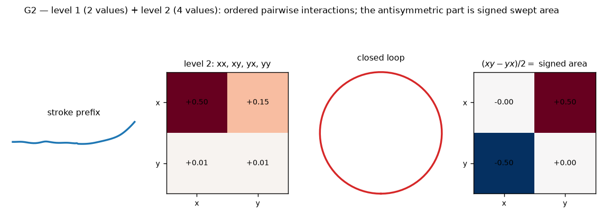
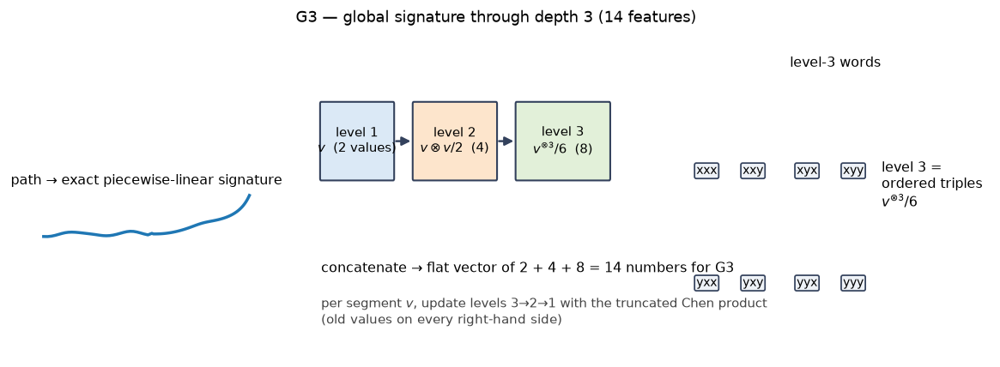
G3R3, G3H3, TEMPLATE
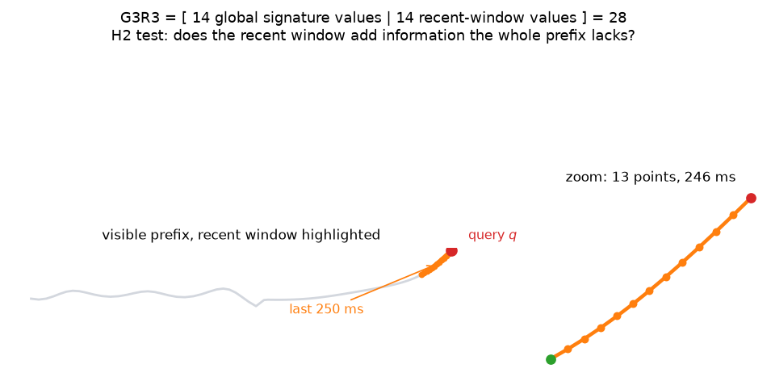
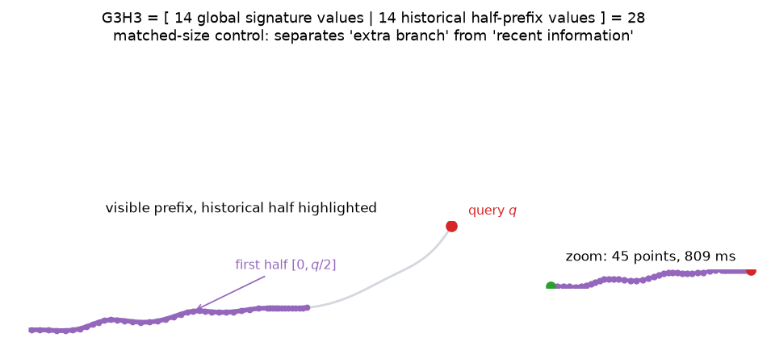
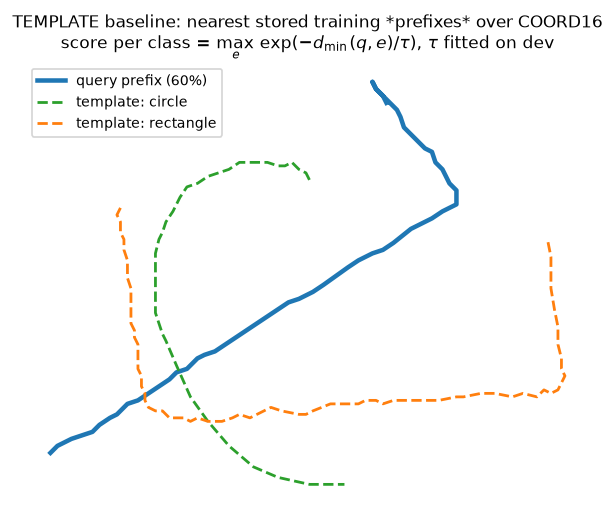
5. Protocol
Every representation uses one classifier family: a weighted StandardScaler followed by
multinomial logistic regression (lbfgs, max 1,000 iterations, \(C \in \{0.1, 1, 10\}\)). Each stroke
contributes up to 12 prefix states chosen deterministically from the 25 ms grid (completion always
included, states strictly after \(t=0\)); a stroke contributing \(K\) rows gives each row weight \(1/K\), so
every stroke has equal total training weight. Feature rows are cached per model and reused across the three
values of \(C\).
\(C\) is selected on the development writers by mean balanced accuracy over the fraction grid \(\{0.1,\dots,1.0\}\), where the prediction for a fraction is taken from the latest query-grid tick at or before it — the same semantics offline replay uses, so no evaluation reads a prediction the online system could not have made. After \(C\) is frozen, a single temperature is fitted on the calibration writers by bounded scalar minimisation of the stroke-weighted negative log-likelihood (log-bounds \([-3,3]\)). Temperature changes confidence, never class ordering.
The commitment policy
The policy is a pure state machine consuming calibrated probabilities plus causal observation evidence. A commitment requires, at the same tick: at least 75 ms elapsed; at least 8 distinct observed points (counted with a scale-relative tolerance); the same winning class at probability \(\ge \theta\) for at least 100 ms; at least three ticks in that window; and at least three ticks with genuinely new movement (pauses and heartbeats do not count). The candidate resets on class change or threshold failure; there is exactly one commitment, ever.
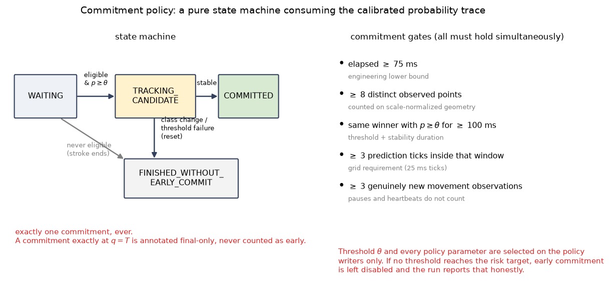
Operating points are swept over thresholds \(\{0.50,\dots,0.99\}\) on the policy writers. A threshold is feasible when empirical selective error \(\le 5\%\) with at least 30 early commitments; among feasible points we take the highest correct early coverage, tie-breaking on lower mean effective decision fraction and then higher threshold. The target is never relaxed after seeing data. If a commitment is made exactly at \(q=T\) it is annotated final-only; at pointer-up without a commitment the system emits a separately labelled final fallback that is never counted as early.
What gets measured
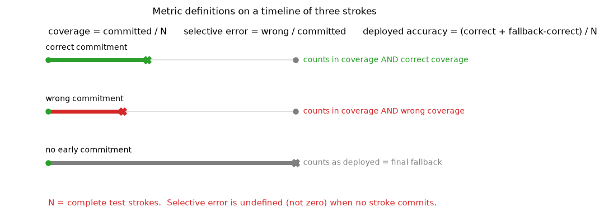
Uncertainty respects the evaluation unit: repeated prefixes of one writer are not independent trials, so bootstrap resamples whole writers (families for synthetic data), 1,000 draws. With fewer than three clusters, a population interval is not estimable and the code returns a clearly labelled stroke-level interval conditional on the observed writers instead.
6. Results
6.1 Five-fold public results (pooled out-of-fold, 1,800 strokes per model)
| model | commits | coverage | selective error [95% CI] | correct cov. | deployed acc. | mean eff. frac. | final acc. |
|---|---|---|---|---|---|---|---|
| G1 | 164 | 0.091 | 0.049 [0.000, 0.115] | 0.087 | 0.284 | 0.927 | 0.236 |
| G2 | 1185 | 0.658 | 0.095 [0.024, 0.172] | 0.596 | 0.818 | 0.594 | 0.603 |
| G3 | 1700 | 0.944 | 0.048 [0.019, 0.084] | 0.899 | 0.941 | 0.346 | 0.839 |
| G3R3 | 1419 | 0.788 | 0.044 [0.023, 0.068] | 0.753 | 0.952 | 0.439 | 0.871 |
| G3H3 | 1725 | 0.958 | 0.021 [0.006, 0.039] | 0.938 | 0.975 | 0.386 | 0.954 |
| MOTION | 1161 | 0.645 | 0.043 [0.023, 0.065] | 0.617 | 0.852 | 0.606 | 0.714 |
| COORD16 | 1712 | 0.951 | 0.060 [0.027, 0.096] | 0.894 | 0.933 | 0.399 | 0.947 |
| TEMPLATE | 1474 | 0.819 | 0.022 [0.006, 0.046] | 0.801 | 0.956 | 0.575 | 0.938 |
Reading example: G3H3 commits before completion on 95.8% of strokes, of which 2.1% are wrong. G1 is the opposite extreme — its policy is feasible in only two of the five folds, and its completion-time accuracy (23.6%) is far below its mid-stroke knowledge.
| model | fold 0 | fold 1 | fold 2 | fold 3 | fold 4 |
|---|---|---|---|---|---|
| G1 | 0.00 / – | 0.00 / – | 0.32 / 0.043 | 0.14 / 0.061 | 0.00 / – |
| G3 | 0.97 / 0.040 | 0.95 / 0.009 | 1.00 / 0.122 | 0.85 / 0.003 | 0.95 / 0.056 |
| G3R3 | 0.96 / 0.046 | 0.99 / 0.011 | 1.00 / 0.081 | 0.99 / 0.039 | 0.00 / – |
| G3H3 | 0.99 / 0.045 | 0.98 / 0.008 | 0.99 / 0.042 | 0.93 / 0.000 | 0.90 / 0.006 |
Coverage / selective error per fold; “–” means the policy was infeasible on that writer's policy partition, so early commitment was disabled rather than the target being relaxed. Two operational facts matter more than the pooled averages: writer difficulty varies enormously (G3's fold-2 error is 40× its fold-3 error), and single-writer policy selection is fragile.
6.2 Forced predictions: where the information is
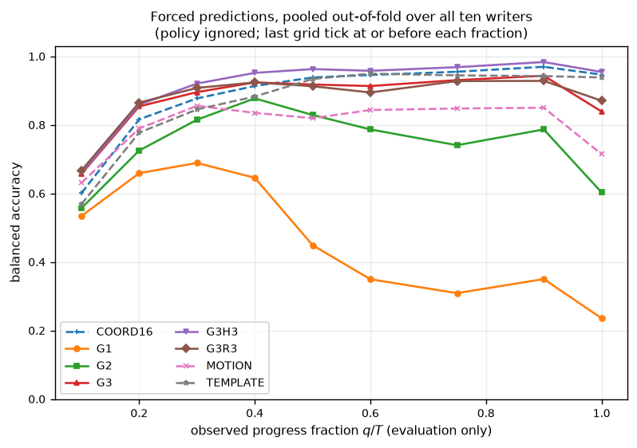
| model | 25% | 50% | 75% | 100% |
|---|---|---|---|---|
| G1 | 0.675 | 0.449 | 0.309 | 0.236 |
| G2 | 0.774 | 0.829 | 0.741 | 0.603 |
| G3 | 0.889 | 0.918 | 0.931 | 0.839 |
| G3R3 | 0.902 | 0.913 | 0.928 | 0.871 |
| G3H3 | 0.897 | 0.963 | 0.968 | 0.954 |
| MOTION | 0.826 | 0.819 | 0.848 | 0.714 |
| COORD16 | 0.855 | 0.938 | 0.955 | 0.947 |
| TEMPLATE | 0.816 | 0.934 | 0.944 | 0.938 |
- Depth-1 is non-monotone. G1 is nearly twice as accurate at 25% as at completion: closed shapes return to their origin, so displacement becomes actively misleading.
- Depth 3 is where the signal concentrates. G2 plateaus near 0.83; G3 reaches 0.92–0.93.
- The gain is not merely capacity. The 32-dimensional COORD16 baseline is nearly matched by 14-dimensional G3 at 50% (0.938 vs 0.918), and the two 28-dimensional branches are the best late-stage models.
6.3 The three registered hypotheses
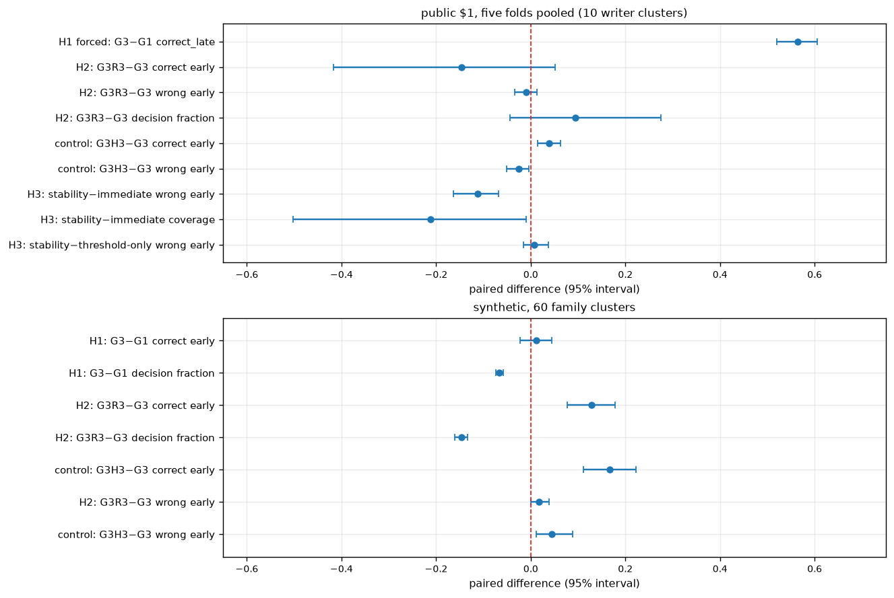
H1 — ordered geometry helps: supported. On paired forced predictions over late fractions (0.5/0.75/1.0), G3 − G1 = +0.565 [+0.520, +0.605]. In deployed terms: +0.813 correct early coverage, +0.657 deployed accuracy, 58 points of stroke earlier. G2 sits between G1 and G3 exactly as predicted (+0.509 correct coverage).
H2 — recent window helps earlier decisions: inconclusive on public data. G3R3 − G3 correct early coverage = −0.146 [−0.417, +0.051]; wrong coverage −0.010 [−0.034, +0.013]; decision fraction +0.094 [−0.043, +0.276]; forced late correctness +0.008 [−0.016, +0.027]. The negative coverage point estimate is dominated by one fold where the G3R3 policy was infeasible. On the synthetic dataset the recent window does help (+0.128 correct coverage [0.078, 0.178], 14.7 points earlier, +0.017 wrong coverage [0.000, 0.039]). The decisive control is G3H3: with the same 28 dimensions but a historical half-prefix it improves public correctness (+0.039 [0.015, 0.063]) and reduces wrong coverage (−0.025 [−0.051, −0.004]). The extra branch helps; recency specifically does not.
H3 — abstention is useful: supported, with a coverage cost.
| policy (G3R3) | strokes | commits | coverage | selective error | mean eff. frac. |
|---|---|---|---|---|---|
| immediate first eligible | 1800 | 1800 | 1.000 | 0.147 | 0.141 |
| confidence threshold only | 1080 | 1063 | 0.984 | 0.039 | 0.307 |
| threshold + stability (100 ms) | 1800 | 1419 | 0.788 | 0.044 | 0.439 |
Stability versus immediate reduces wrong early coverage by −0.112 [−0.163, −0.068] at a coverage cost of −0.212 [−0.502, −0.010]; the same direction holds for G3 and G3H3. Against threshold-only, stability is statistically indistinguishable on error, and for G3 it commits on +0.126 more coverage [0.017, 0.243] at equal error; in two folds it is also the only feasible variant. On synthetic data the contrast is starker: immediate commitment has 66.7% selective error because the prefix is shared, versus 0–4% with threshold + stability.
6.4 The leakage check that forces honesty
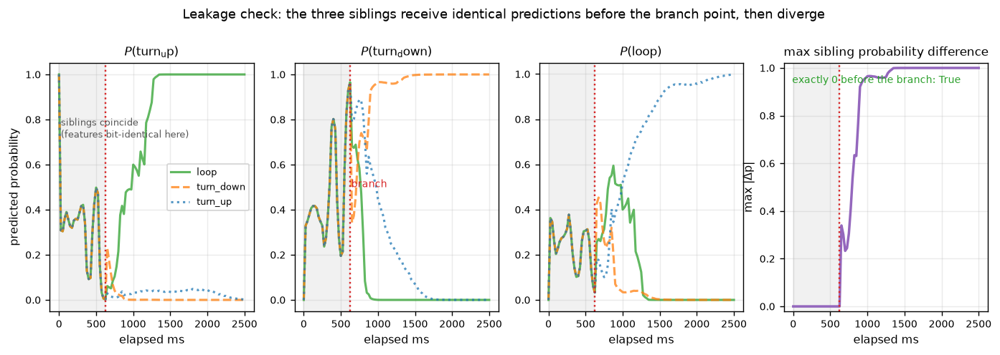
6.5 The failure we did not expect: stage sensitivity
The registered protocol trains one classifier across early, mid, and completed prefixes. On public fold 0 the pooled G3 model is better mid-stroke than at completion:
| training rows used | 30% | 50% | 90% | 100% |
|---|---|---|---|---|
| pooled (registered protocol) | 0.919 | 0.975 | 0.881 | 0.811 |
| completion-only fit | – | – | – | 0.944 |
| mid-progress-only fit | – | 0.958 | – | 0.189 |
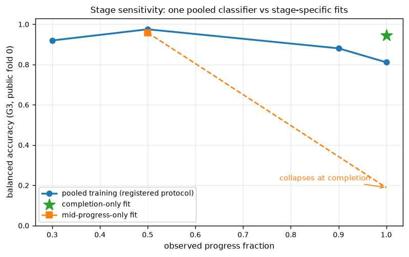
The errors are specific class pairs, not uniform noise. At completion on fold 0, G3R3 confuses arrow→caret 29/60 and triangle→circle 32/60; G3 additionally confuses check→arrow 27/60; and G3H3 mispredicts only 4/60 and 2/60 respectively.
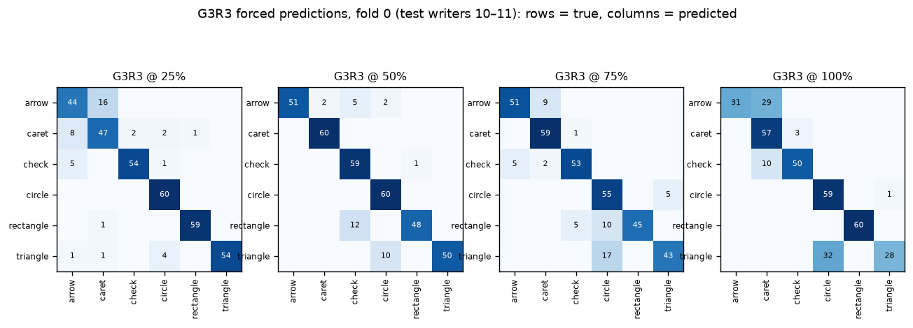
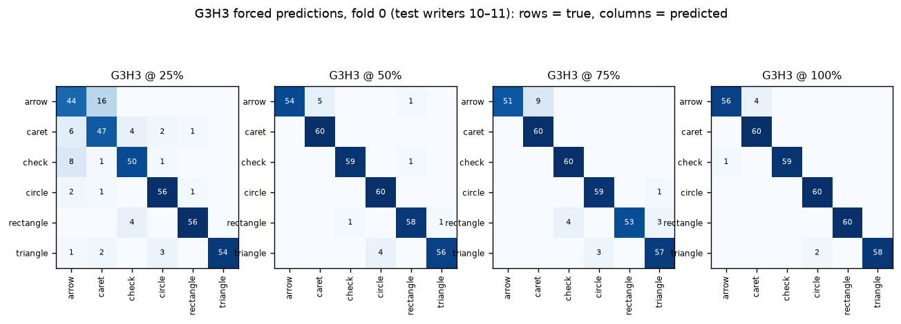
6.6 Robustness under shift
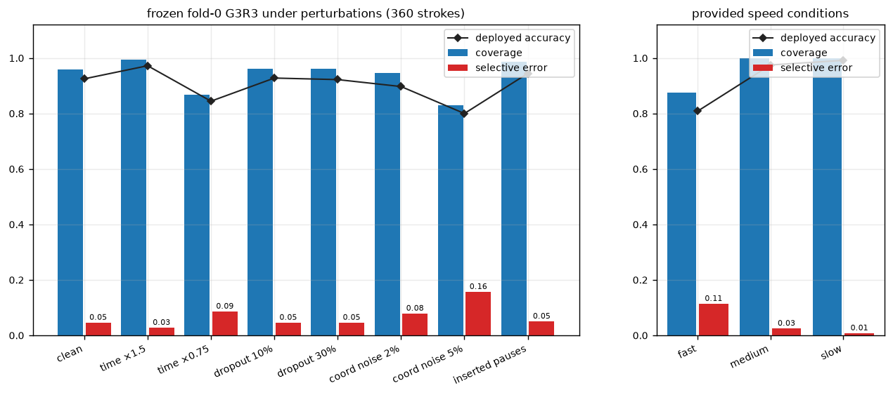
| variant | n | commits | coverage | selective error |
|---|---|---|---|---|
| clean | 360 | 345 | 0.958 | 0.046 |
| timestamps ×1.5 | 360 | 358 | 0.994 | 0.028 |
| timestamps ×0.75 | 360 | 312 | 0.867 | 0.087 |
| dropout 10% / 30% | 360 | 346 | 0.961 | 0.046 |
| coordinate noise 2% / 5% | 360 | 341 / 299 | 0.947 / 0.831 | 0.079 / 0.157 |
| inserted pauses | 360 | 355 | 0.986 | 0.051 |
| speed = fast / medium / slow | 120 each | 105 / 120 / 120 | 0.875 / 1.000 / 1.000 | 0.114 / 0.025 / 0.008 |
6.7 Representative outcomes
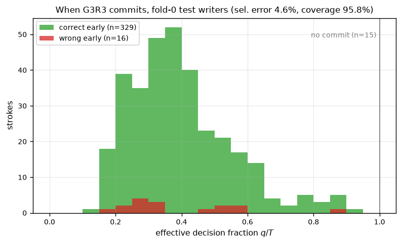
- Fastest correct decisions: three slow-condition arrow trials commit correctly at 175 ms — 15% of the stroke.
- All sixteen wrong commitments are arrow→caret at 175–200 ms. The two classes share an opening direction, and the 100 ms stability gate is satisfied before either bends; thirteen of sixteen come from one writer's fast/medium trials.
- Waits cluster on fast caret/check strokes whose confidence never stabilised; several also had a wrong final fallback, so waiting did not rescue them.
6.8 Calibration
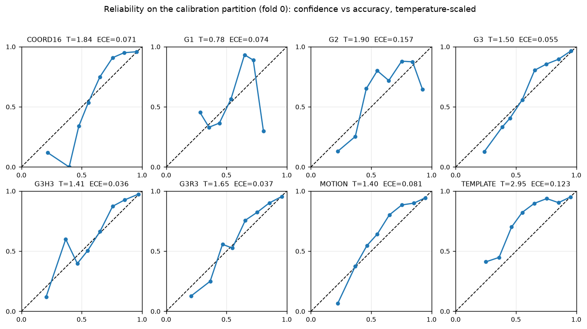
Temperatures are interior optima for all eight models (largest: TEMPLATE at 2.946, near but inside the practical bound). Temperature improves every model; weighted NLL after calibration ranges from 0.461 (G3H3) to 1.219 (G1) on 2,152 calibration rows.
6.9 Cost
Live-update latency for G3R3 (prefix extraction + feature extraction + calibrated prediction): mean 0.83 ms, median 0.83 ms, p95 1.31 ms, max 4.32 ms over 504 updates, against a 50 ms p95 budget. Peak process RSS across standard runs is 130–165 MB against a 2 GB budget. No GPU, network, or compiled extension is required; threads are limited to one for reproducibility.
6.10 What was corrected during review
A line-by-line review of the implementation produced fourteen real defects, all fixed and covered by regression tests before these results were finalised. The most consequential: live drawing was vertically reflected relative to the model's frame; off-grid completion timestamps were never processed; pointer-up could lose queued observations and raced session creation; fold aggregation did not validate fold composition; synthetic robustness perturbations were not family-shared; H1/H2 labels used policy-dependent evidence instead of the registered comparisons; the first-eligible policy could not commit on its first tick; point-count gates depended on raw coordinate units; cached archives were not re-verified; forced curves did not use the replay grid; API batches mutated before validation; and per-fold bundles overwrote each other. The affected experiments were re-run after the fixes, so every number on this page comes from the corrected pipeline.
7. Reproduction
uv python install 3.12
uv venv --python 3.12 && source .venv/bin/activate
uv pip install -e ".[dev]"
earlysig doctor
python -m pytest -q # 53 tests
earlysig data synthetic --config configs/smoke.yaml
earlysig run --config configs/smoke.yaml
earlysig run --config configs/synthetic.yaml
earlysig data dollar --download # verifies size + SHA-256
earlysig data audit --dataset dollar
earlysig run --config configs/dollar6.yaml --all-folds
earlysig aggregate --runs reports/runs/BASE_DIR
earlysig serve --bundle BUNDLE --port 8000
Each run directory is immutable and contains the resolved config, environment and source digests, dataset
audit and split manifest, model selection and calibration tables, policy sweeps, per-stroke commitments,
comparisons, dense prediction traces, figures, and a generated report. The five-fold public run is
20261106-164925-dollar6-f323a05c333b2727; the served bundle is
G3R3-f323a05c333b2727-aa8f4f48-fold0.joblib.
8. Limitations
- Ten writers on one tablet protocol. A single fold tests on two writers; even the pooled intervals span ten writers, not a population.
- The synthetic families are a leakage diagnostic; good scores there are properties of the generator.
- Selective error is an empirical measurement, not a population or sequential guarantee. A calibrated 0.95 is not a promise that 95% of commitments will be correct.
- The pooled classifier's completion accuracy understates the representation's potential (0.81 vs 0.944 for a completion-only fit); per-stage training is a separate, unregistered experiment.
- Personal mouse/touch input is a domain shift from tablet strokes; the local-recording path is within-person cross-session only.
- Scope is one stroke, closed set, known start and completion. The 16-class profile and the arc-length window variant remain unimplemented.